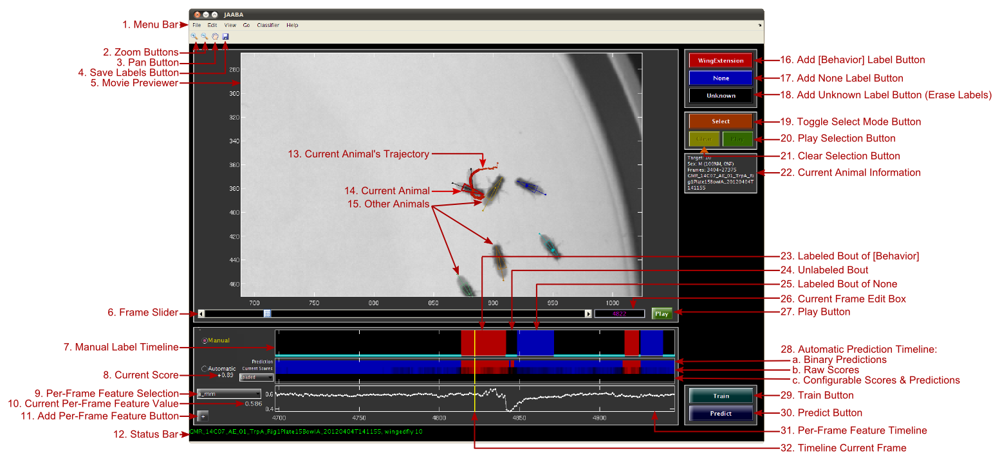

JAABA GUI Overview
On this page, we describe each component of the JAABA GUI.

Annotated Screen Capture of Main GUI
-
- Zoom Buttons
: When toggled on, these buttons can be used to
zoom in or out on the Movie Previewer view, the number of frames shown
in all the timelines, and the y-axis limits for the
Per-Frame Feature Timelines. Be sure to toggle these buttons
off when you are done changing the axes limits to restore normal function.
- Pan Button
When toggled on, this button can be used to pan the
Movie Previewer view, or change the y-axis limits in the
Per-Frame Feature Timelines.
- Save Labels Button: Save the labels for the current project.
- Movie Previewer: Window showing the current frame of the
current video, annotated with the animals' tracked positions. This is the main interface for allowing
the user to see the current animal's behavior.
- Frame Slider: The current frame can be changed by moving the frame slider.
- Manual Label Timeline: This timeline shows the labels the user has added for a window
of frames centered on the current frame. The x-axis corresponds to time, and the color indicates the
label. The size of this window can be set using the Zoom Buttons or through
the View->Timeline View Options menu item.
- Current Score: The raw score output by the current classifier for the current frame.
This value will be positive if the behavior is predicted and negative if the None class is
predicted. The magnitude of this number corresponds to the classifier's confidence. This
number corresponds with the color shown in the Automatic Prediction
Timeline's Raw Scores row.
- Per-Frame Feature Selector: This drop-down menu can be used to select the per-frame
feature shown in the timeline to the timeline to the right. If you select Remove from
the list, this timeline will be removed. Help currently not implemented.
- Current Per-Frame Feature Value: The value of the per-frame feature for the current frame.
This number corresponds with the y-coordinate of the per-frame feature timeline for the current frame.
- Add Per-Frame Feature Button: Push this button to add a new per-frame feature timeline to
the display.
- Status Bar: The Status Bar shows important information about the
current state of JAABA. If the text is green, JAABA is not busy and you can click buttons, etc. If the
text is magenta, then JAABA is busy computing something, and you should wait until it turns green again
before using the GUI again. When it is not busy, the Status Bar shows information about the current
video and the current animal.
- Current Animal's Trajectory: The trajectory of the currently selected animal is plotted for a
window of frames before and after the current frame. Centroid positions are shown as connected dots. The
number of frames before and after the current frame plotted can be set in the View->Preview Options menu.
- Current Animal: The currently selected animal's tracked position in the current frame is plotted.
The currently selected animal's position is plotted with a thicker outline, the color of which is
set by either the manual or automatic labels for the current frame, depending on the current configuration.
For flies and mice, a triangle is plotted to indicate the size of the ellipse fit to the animal and its
head direction. If the fly's wings are tracked, lines from the fly centroid to the tips of each wing are
also plotted. For larvae, an 11-point line from the animal's head to its tail through its center is plotted.
The head is indicated with a large circle. For flies and mice, the sex of the animal is indicated by the
presence (male) or absence (female or unknown) of a dot at the animal's center.
- Other Animals: All other tracked animals' positions are plotted. They can be distinguished from
the selected animal by the thickness of the outline (their outlines are thinner). The color of the outline is
unique per animal.
- Add [Behavior] Label Button: This button is pushed to start or end labeling a bout of the
behavior. It is equivalent to press the corresponding keyboard
shortcut.
- Add None Label Button: This button is pushed to start or end labeling a bout of the
None behavior class. It is equivalent to press the corresponding
keyboard shortcut.
- Add Unknown Label Button: The labels for all frames is Unknown by default. This button can
be used to set the labels for frames to Unknown, effectively erasing other labels given to the frame.
Pressing this button starts or ends labeling a bout of Unknown label. It is equivalent to press the corresponding
keyboard shortcut.
- Toggle Select Mode Button: Pressing this button toggles whether Select Mode is enabled or not.
If it is enabled, intervals of the timeline can be selected by clicking and dragging. These intervals
can then be played or bookmarked.
- Play Selection Button: If an interval of time is selected, pressing this button will play/stop
playing the selected interval in a loop.
- Clear Selection Button: Set no interval to be selected
- Current Animal Information: Information about the currently selected animal. The information is:
- Target: Animal identity number.
- Sex: The sex of the animal in the current frame (for some trackers, sex is classified per-frame,
in case identities are swapped by the tracker) and, in parentheses, the percent of frames over the entire
trajectory that the animal is labeled as male and female.
- Frames: Which frames the animal is tracked for.
- Experiment Name: The name of the experiment directory for the current video.
- Labeled Bout of [Behavior]: The red interval on the Manual Timeline
shows a bout of frames that were labeled as the behavior.
- Unlabeled Bout: Black indicates that the frames have not been labeled. Note that it is often
difficult to tell exactly when a behavior begins or ends, so there will often be a short unlabeled interval
of frames between a bout of the behavior and a bout of None.
- Labeled Bout of None: The blue interval on the Manual Timeline
shows a bout of frames that were labeled as None (the behavior is not occurring).
- Current Frame Edit Box: Text edit box that shows the current frame number. This number can be
modified to change the current frame.
- Play Button: Pushing this button starts or stops playing the video. The playback speed
can be set with the View->Preview Options menu item.
- Automatic Predictions Timeline: This timeline shows the classifier's
behavior label predictions for a window of frames centered on the current frame. The x-axis corresponds to
time, and the color indicates the predicted behavior class. The size of this window can be set using the
Zoom Buttons or through the View->Timeline View Options menu item. Within this timeline,
there are three rows:
a. Binary Predictions: The classifier's predictions of whether the behavior is or is not being performed in
each frame. Usually, if the current classifier has predicted the current window of frames, then this timeline will
be saturated red (behavior) or blue (not-behavior). If this timeline is black, then predictions may not have been
generated for these frames. Pressing the Predict Button will apply the current classifier
to a window of frames around the current frame and fill in this timeline. (Note that leaving a gap between the behavior
and none thresholds can also result in frames that are predicted as unknown and are also colored black, but in general
such thresholds are not used.) This timeline is generated by thresholding the Raw Scores timeline below, usually at 0.
b. Raw Scores: The raw output from the current classifier. Red indicates that the behavior is predicted, and blue
that None is predicted. The saturation of the color indicates the classifier's confidence. If this timeline is all
black, then predictions may not have been generated for these frames. Pressing the Predict
Button will apply the current classifier to a window of frames around the current frame and fill in this timeline.
c. Configurable Scores and Predictions: This timeline is again broken into two sub-timelines.
The first sub-timeline shows raw scores and the second sub-timeline shows the binary, thresholded version of these predictions.
The following choices are available:
- None: Nothing is shown.
- Validated: The out-of-training-set scores and predictions produced using
cross calidation.
- Old: The scores and predictions from the previous classifier.
- Loaded: The scores and predictions loaded from external files.
- Postprocessed: The current scores and the predictions that result from Post
Processing.
- Train Button: Pressing this button trains a new classifier using the current labels.
- Predict Button: Pressing this button computes the classifier's raw scores and predictions for a
window of frames around the current frame.
- Per-Frame Feature Timeline: This timeline shows the value of the selected per-frame feature over a window of
frames around the current frame. The x-axis corresponds to time, the y-axis to the per-frame feature value. The y-axis
limits can be set using the Zoom and Pan buttons.
- Timeline Current Frame: This line indicates the current frame in the timelines.